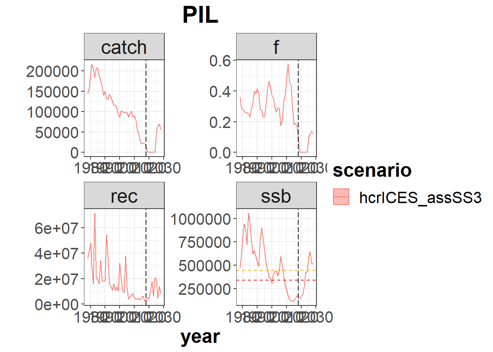
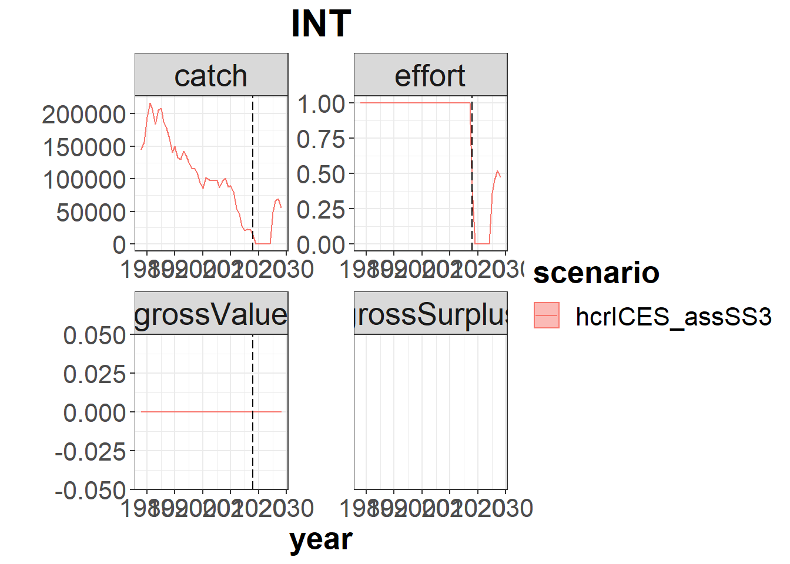
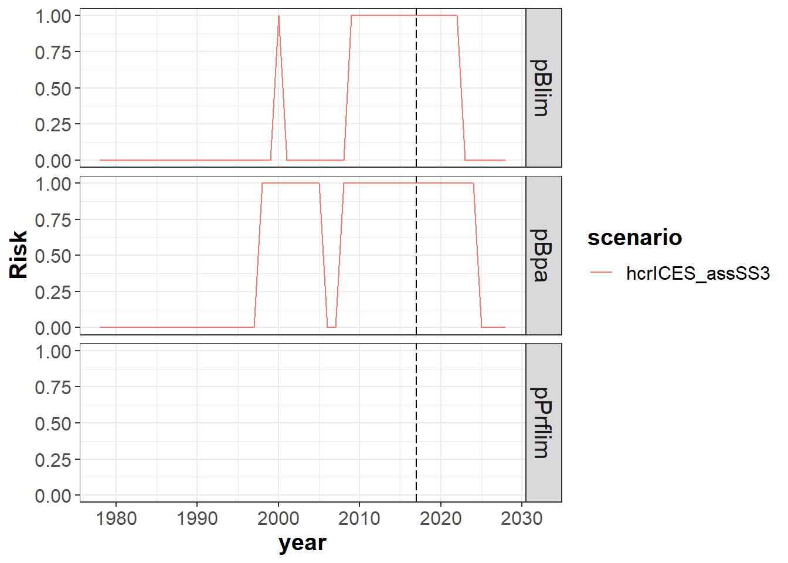
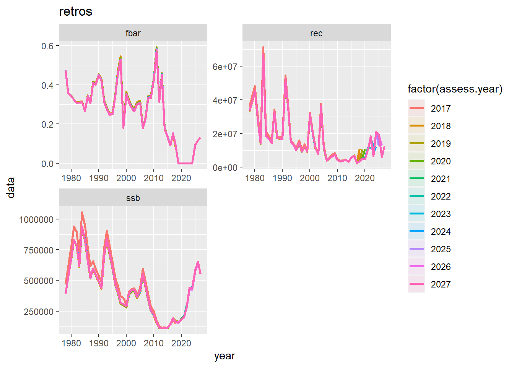
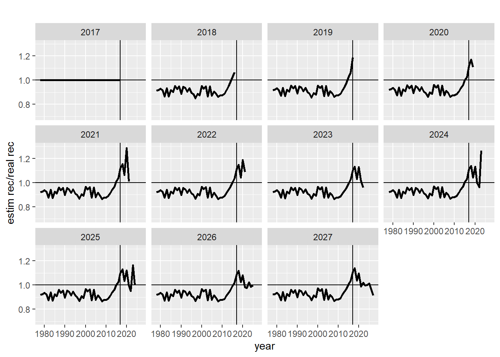
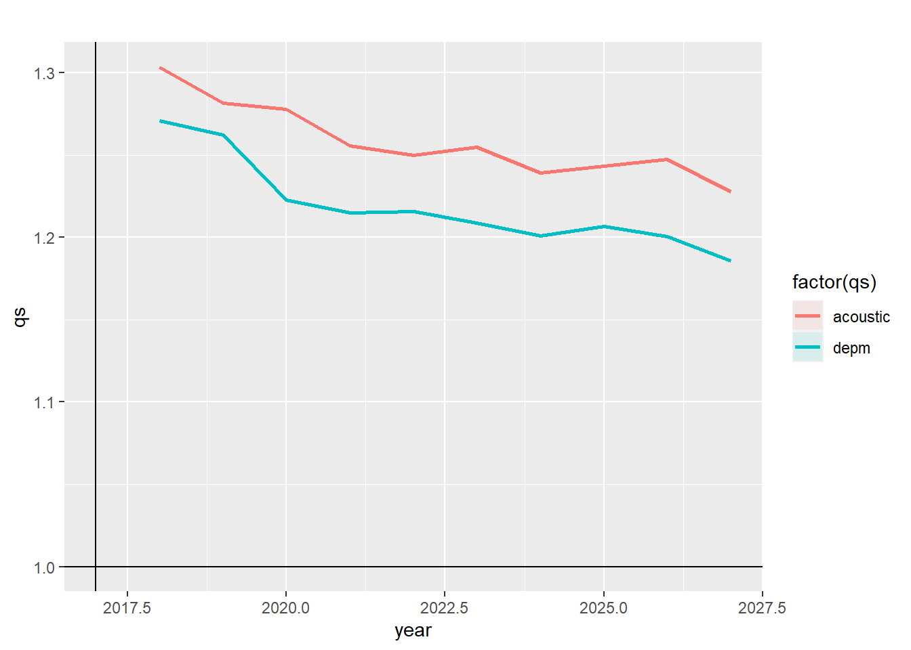
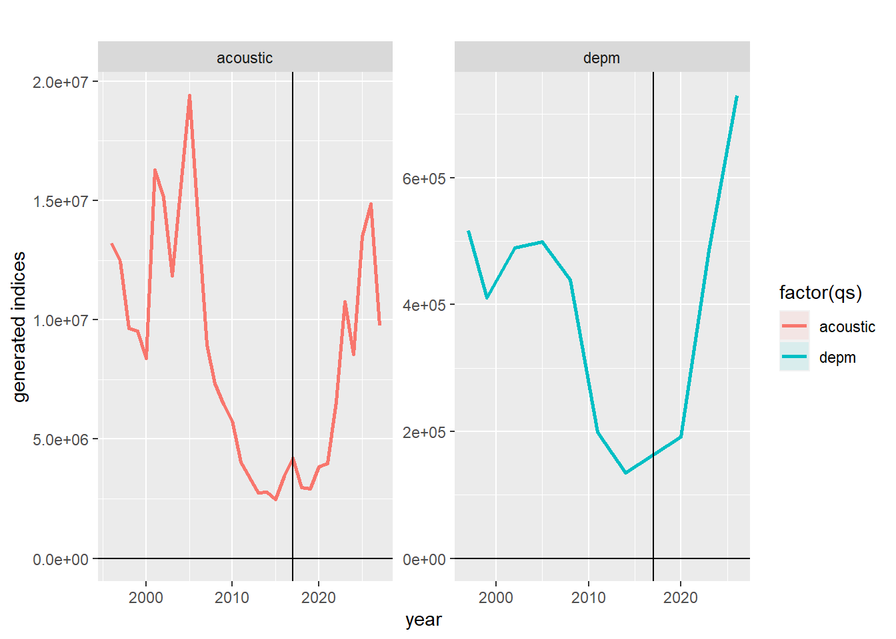
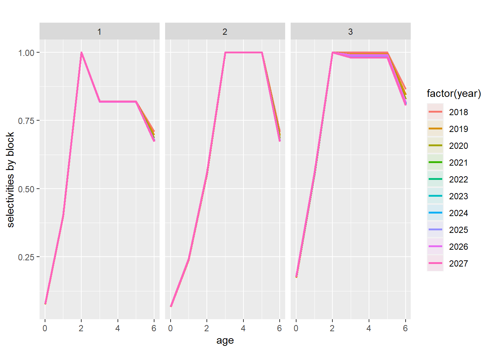

Including SS3 assessment within the Management Procedure of FLBEIA
27 mayo, 2020

Aim
FLBEIA (Garcia et al. 2017) provides a battery of tutorials for learning how to use this software. This tutorial is a practical guide about how to use Stock Synthesis (SS3) (Methot and Wetzel 2013) assessment model to assess the stock status within FLBEIA in the Management Procedure (MP).
In this tutorial it is presented an example on how to include SS3 within the MP to assess a stock. It has to be stated that this is an example for a particular stock and in case of aiming to use it for other stock this should only serve as a guide, because some of the functions are case specific. This will be detailed along the tutorial.
Required packages to run this tutorial
To follow this tutorial you should have installed the following packages:
- FLR: FLCore and FLFleet.
- Stock Synthesis: r4ss.
- Data manipulation: arrayhelpers, reshape2, dplyr and tidyr.
install.packages( c("FLCore", "FLFleet", "FLBEIA"),
repos="http://flr-project.org/R")
install.packages(c("r4ss","reshape2","arrayhelpers","dplyr","tidyr"))It has to be noted that packages FLCore, FLFleet and FLBEIA have to be installed in this exact order, as alternative orders can cause some problems.
Load all thenecessary packages.
library(FLBEIA)
library(r4ss)
library(reshape2)
library(arrayhelpers)
library(tidyr)
library(dplyr)Loading your data
The first step is to condition the Operating Model and the Management Procedure with all the relevant information.
In this example, we will take most of the objects required to run the MSE from an .RData file and we will exclusively focus on the observation and assessment part.
For this case, the Operating Model (OM) runs annually and it is formed by a single age-structured stock, the Iberian sardine (Sardina pilchardus, ICES pil.27.8c9a) and an unique fleet which activity is performed in an unique metier (i.e. not differing among the different fleets and metiers targeting the stock).
The file is downloaded into a temporary folder, and uncompressed. Simply change the value of dir to save the file in another folder.
dir <- tempdir()
# download.file("http://www.flr-project.org/doc/src/ibPIL.zip", file.path(dir, "ibPIL.zip"))
# unzip(file.path(dir, "ibPIL.zip"), exdir=dir)
unzip("src/ibPIL.zip", exdir=dir)The FLBEIA input data can now be loaded using load:
load(file.path(dir, "ibPIL.RData"))
ls()## [1] "advice" "advice.ctrl" "biols"
## [4] "biols.ctrl" "covars" "covars.ctrl"
## [7] "dir" "fleets" "fleets.ctrl"
## [10] "indices" "main.ctrl" "obs.ctrl"
## [13] "PIL_ref.pts" "SRs"This data file contains information to condition FLBEIA. Specifically, it contains all the elements to run FLBEIA, except from obs.ctrl and assess.ctrl arguments that will be defined in this tutorial.
The Operating Model (OM) is conditioned with the information from the last stock assessment available (ICES 2018). The population is age-structured (ages 0 to 6+) and exploited by an unique fleet (composed by one metier) and is moved forward in anual steps. It is assumed that the fleet fully complies with the catch advice and this behaviour is obtained using the SMFB function (for details, see information on SMFB function in the FLBEIA manual).
In the Management Procedure (MP), the stock is observed without error, and the stock is assessed with SS3, version 3.24f (Methot 2012). The yearly catch advice (the TAC) is obtained using the HCR used by ICES in the MSY framework for data rich stocks (ICES 2009).
The objects used have 1 iteration and uncertainty in the projection comes exclusively from the generation of the new incoming recruitments.
- Operating model
- Biological:
- Population dynamics:
PIL- age structured population growth - SR model:
PIL- Beverthon and Holt (segmented regression)
- Population dynamics:
- Fleet:
INT- Simple Mixed Fisheries Behaviour - Covariates: no covariates
- Biological:
- Management Procedure
- Observation:
PIL- observation of biological and catch information - Assessment:
PIL- SS3 assessment - Management advice:
PIL- ICES harvest control rule
- Observation:
# Projection years
main.ctrl
# Stock: one stock named as PIL with an age-structured population growth
# - recruitment: generated by a Beverton-Holt model fitted to historical data
summary(biols)
biols.ctrl
summary(SRs)
SRs$PIL@model
SRs$PIL@params
SRs$PIL@uncertainty
# Fleet: one unique fleet (INT), with one unique metier (ALL), targeting only sardine (PIL)
# - effort dynamics: simple mixed fisheries bechaviour
# - catch model : Cobb Douglas at age
# - capital model : fixed capital
# - price model : fixed price
summary(fleets)
summary(fleets$INT@metiers)
summary(fleets$INT@metiers$ALL@catches)
fleets.ctrl
# Covariates: no covariates
covars
covars.ctrl
# Advice: TAC given by ICES HCR
summary(advice)
advice.ctrl
# Indices: two indices available
# - AcousticNumberAtAge: numbers at age
# - DEPM : total biomass every 3 years
summary(indices)
indices$AcousticNumberAtAge@index
indices$AcousticNumberAtAge@index.q
indices$DEPM@index
indices$DEPM@index.qSS3 assessment
The sardine assessment is an age-based assessment assuming a single area, a single fishery, a yearly season and genders combined. Input data include catch (in biomass), age composition of the catch, total abundance (in numbers) and age composition from an annual acoustic survey and spawning stock biomass (SSB) from a triennial DEPM survey. Considering the current assessment calendar (annual assessment WG in November) in year (y), the assessment includes fishery data up to year y-1 and acoustic data up to year y. The reference assessment used was the one from the last assessment year (ICES 2018). For more details, see (ICES 2019).
The model estimates population biomass in the beginning of the last assessment year (interim year). There are data from the acoustic survey but not from the fishery (catch and age composition) for the interim year. Data used for the interim year are the following: stock weights-at-age, catch biomass and catch weights-at-age are equal to those assumed for short-term predictions.
The fishery age composition in the interim year is assumed to be equal to that in the previous year. The fishery age composition is included in the calculation of expected values but excluded from the objective function. Recruitment in the interim year is derived from the stock-recruitment relationship.
The model estimates spawning stock biomass (SSB) and adult biomass (B1+, biomass of age 1 and older) at the beginning of the year. The reference age range for output fishing mortality is 2-5.
For more details on the Iberian sardine stock assessment see the ICES Stock Annex.
To include the SS3 stock assessment model within the MSE simulations running in FLBEIA, we need to create an specifice function that mimics the stock asssessment. This function will update values for every assessment cycle. Such function is not available in the FLBEIA library, as it should be case-specific. Therefore, the function presented here is an example and it should be readapted if it wants to be used for another stock.
We will name the function as ss32flbeia. As inputs, the function needs the ‘observed’ stock and indices objects (surveys) as well as a folder with the reference assessment in SS3 (in this case is exactly the one used to condition the operating model for MSE). This folder is available in the ibPIL.zip file, so it has been already uncompressed in the temp folder (see “./ss3R”). Firstly, you need to choose the appropiate ss3 executable and call it SS3.exe (in the assess_ref folder there are three different options: ss3_win.exe, ss3_linux.exe, ss3_ios.exe).
Within the FLBEIA MSE process, for each projection year, the ss32flbeia function works as follows:
Copies the reference assessment folder (containing all files needed to run ss3)
Reads the
ss3.dat,wtatageand.ctlfilesSets \(10^{-5}\) value for very low observed catches (i.e. when
stock@catch\(<10^{-5}\))Reads the catch and the indices values from the FLR objects
Eliminates catch at age for years where catch is very low (\(<10^{-4}\))
Creates new
.dat,wtatageand.ctlfiles based on the reference.dat,wtatageand.ctlfiles with new catch and indices values from FLR objectsRuns
ss3.exeexecutableReads ss3 output files using the
r4sspackageUpdates
stock@harvestandstock@stock.nslots with SS3 outputSaves convergence indicator, recruitment, fbar, SSB, catchabilities and selectivities from SS3 runs in the covars component of the OM.
Deletes the copied folder after running each realization.
Therefore we translate this into R code:
#########################################################
#### Function to read from FLstock object,
#### create SS3 files (from existing reference ones),
#### run ss3 assessment with new data, and
#### update FLR stock object with estimates from SS3.
#########################################################
########################################################
### Leire Citores september-october 2018 ###############
########################################################
ss32flbeia <- function(stock,indices,control,covars=covars){
# save iteration number
runi <- control$run_it
# last year of the new stock object
lasty <- range(stock)["maxyear"]
# To avoid problems in SS3:
# if catch < 10^-5 --> small value to total catch,
# remove catch at age (done some lines later),
# and put the wt from year before.
stock@catch.wt[,which(is.na(stock@catch.wt[2,]))] <- stock@catch.wt[,ac(lasty-1)]
stock@catch <- computeCatch(stock)
stock@catch[,which(stock@catch<10^-5)] <- 10^-5
# print
cat("catches in it", runi, range(stock)["maxyear"], "\n",
stock@catch[,ac(range(stock)["maxyear"])], "\n")
# ref_name: reference ss3 assessment folder name
ref_name <- control$ref_name
# directory where the folder with the reference ss3 assessment is located
assess_dir <- control$assess_dir
# get current working directory
dir0 <- getwd()
# set the new working directory
setwd(assess_dir)
# create a new folder where the new assessment will be run
dir <- paste0("assess_temp", runi, lasty)
dir.create(dir)
# copy the reference assessment folder into the new folder
file.copy(ref_name, dir, recursive = TRUE)
# set the working directory inside this folder
# (at the end of the assessment this new folder will be deleted,
# but the reference assessment is always kept)
temp_dir <- paste0(dir,paste0("/",ref_name))
setwd(temp_dir)
################################################################
#### read data from new FLR objects and write to SS3 files
#################################################################
# last year of the new stock object
lasty <- range(stock)["maxyear"]
# read reference assessment data file
datss <- SS_readdat("sardine.dat", verbose= FALSE, version = 3.24)
##control file
ctl <- readLines("sardine.ctl")
# natural mortality vector
ctl[27] <- paste(m(stock)[,1],collapse=" ")
# - update the year in the control file (from reference assessment year to actual year)
ctl_new <- gsub(pattern = ac(datss$endyr), replace = ac(lasty), x = ctl)
# - update the year recruitmen devs (assessment year-1)
ctl_new <- gsub(pattern = ac(datss$endyr-1), replace = ac(lasty-1), x = ctl_new)
# - write the new control file, it overwrites the old one
writeLines(ctl_new, con="sardine.ctl")
# total catch
catch <- melt(catch(stock)[,])[,c("value","year")]
catch$seas <- 1
colnames(catch) <- colnames(datss$catch)
datss$catch <- catch
# age structured catch and index
catchn <- dcast(na.omit(melt(catch.n(stock)[,])[,c("value","year","age")]),year~age)
catchn <- cbind(catchn[,1],subset(datss$agecomp,FltSvy==1)[1,2:9],catchn[,-1])
lastrow <- dim(catchn)[1]
# no catch at age for the last year available (--> delete this value)
catchn <- catchn[-lastrow,]
# remove catch at age when catch<10^-4
catch0years <- which(catchn[,ac(4)]<10^-4)
if(length(catch0years)>0)
catchn <- catchn[-catch0years,]
# set manullay sample size for catch.n for years > 1990
# sample size = 50 for year <= 1990
# sample size = 75 for year > 1990
# (see Iberian sardine Stock Annex for details)
catchn[,"Nsamp"][catchn[,1]>1990] <- 75
indexn <- dcast(na.omit(melt(indices[[1]]@index[,])[,c("value","year","age")]),year~age)
indexn <- cbind(indexn[,1],subset(datss$agecomp,FltSvy==2)[1,2:9],indexn[,-1])
colnames(indexn) <- colnames(catchn)<-colnames(datss$agecomp)
agecomp <- rbind(catchn,indexn)
datss$agecomp <- agecomp
# biomass indices
index2 <- cbind(indexn[,1],rowSums(indexn[,c(10:16)]))
se_log2 <- subset(datss$CPUE,index==2)$se_log
index2 <- cbind(year=index2[,1],seas=1,index=2,obs=index2[,2],se_log=mean(se_log2))
index3 <- na.omit(melt(indices[[2]]@index[,])[,c("value","year")])
se_log3 <- subset(datss$CPUE,index==3)$se_log[1]
index3 <- cbind(year=index3$year,seas=1,index=3,obs=index3$value,se_log=se_log3)
datss$CPUE <- as.data.frame(rbind(index2,index3))
################################################################################
#number of lines
datss$styr <- min(catch$year)
datss$endyr <- an(lasty)
datss$N_catch <- dim(datss$catch)[1]
datss$N_cpue <- dim(datss$CPUE)[1]
datss$N_agecomp <- dim(datss$agecomp)[1]
#write the new data file, it overwrites the old one
SS_writedat(datss,"sardine.dat", overwrite = TRUE, verbose = FALSE, version = "3.24")
##wtatage file
#stock weight (fleet=0)
stockwt <- t(stock.wt(stock)[,,drop=TRUE])
stockwt <- cbind(rownames(stockwt),1,1,1,1,0,stockwt)
stockwt <- apply(stockwt,1,function(x){paste(x,collapse="\t")})
names(stockwt) <- NULL
# weigth for age structured acoustic index (fleet=2) (same as stock weight)
index2wt <- t(stock.wt(stock)[,,drop=TRUE])
index2wt <- cbind(rownames(index2wt),1,1,1,1,2,index2wt)
index2wt <- apply(index2wt,1,function(x){paste(x,collapse="\t")})
names(index2wt) <- NULL
# catch weight (fleet 1 and -1)
catchwt <- t(catch.wt(stock)[,,drop=TRUE])
catchwt <- cbind(rownames(catchwt),1,1,1,1,1,catchwt)
catchwt <- apply(catchwt,1,function(x){paste(x,collapse="\t")})
names(catchwt) <- NULL
catchwt_1 <- t(catch.wt(stock)[,,drop=TRUE])
catchwt_1 <- cbind(rownames(catchwt_1),1,1,1,1,-1,catchwt_1)
catchwt_1 <- apply(catchwt_1,1,function(x){paste(x,collapse="\t")})
names(catchwt_1) <- NULL
# maturity (fleet=-2)
mat <- t((mat(stock)*stock.wt(stock))[,,drop=TRUE])
mat <- cbind(rownames(mat),1,1,1,1,-2,mat)
mat <- apply(mat,1,function(x){paste(x,collapse="\t")})
names(mat) <- NULL
# read the reference weight file
wta <- readLines("wtatage.ss")[1:7]
# generate the new weigth matrix with the data from FLR objects
wta_new <- c(wta,stockwt,catchwt,mat,catchwt_1,index2wt)
# update number of lines
wta_new[1] <- ac(length(wta_new)-length(wta))
# write the new weight file, it overwrtites the old one
writeLines(wta_new, con="wtatage.ss")
################################################################
## execute SS3
## (be careful to use the adecuate executable depending on the
## operating system -windows, linux or ios-)
################################################################
system('./SS3.exe')
#####################################################
### S3 output back to FLR. Just harvest and stock:
#####################################################
dir.assess <- paste0(getwd(),"")
assess <- SS_output(dir = dir.assess, forecast = FALSE, printstats = FALSE, verbose = FALSE)
maxyear <- assess$endyr
ages <- assess$agebins
years <- assess$startyr:assess$endyr
#------------------------------------
# extract assessment outputs:
# F-AT-AGE, REFERENCE F
#
# we need to calculate F-at-age from apical F
# (i.e. F on the fully selected age) and
# selectivity at age
#------------------------------------
selectivity <- subset(assess$ageselex, Fleet==1 & Factor=="Asel2" & Yr %in% years,
select=c("Yr", ac(ages)))
idx <- grep("F_", assess$derived_quants$Label)
f.apical <- data.frame(f=assess$derived_quants[idx,"Value"])
f.apical$Yr <- years
f.apsel <- merge(f.apical, selectivity, all.x = TRUE, by="Yr")
f <- f.apsel$f * f.apsel[,ac(ages)]
harvest <- FLQuant(unname(as.matrix(t(f))),quant="age",units="f",
dimnames=list(age=ac(ages), year=ac(years)))
#------------------------------------
# extract assessment outputs:
# NUMBERS-AT-AGE
#------------------------------------
natage <- subset(assess$natage, Era=="TIME" & `Beg/Mid`=="B" , select=ac(ages))
stock.n <- FLQuant(unname(as.matrix(t(natage))), quant='age', units='NA',
dimnames=list(age=ac(ages), year=ac(years)))
# update stock object
harvest(stock) <- harvest
stock.n(stock) <- stock.n
stock(stock) <- computeStock(stock)
# fill covars to see retros
covars$ssb[ac(lasty),ac(years)] <- ssb(stock)[,]
covars$rec[ac(lasty),ac(years)] <- rec(stock)[,]
covars$fbar[ac(lasty),ac(years)] <- fbar(stock)[,]
params <- assess$parameters
q2 <- exp(subset(params,Label=="LnQ_base_2_Acoustic_survey")[,"Value"])
q3 <- exp(subset(params,Label=="LnQ_base_3_DEPM_survey")[,"Value"])
covars$qs[1,ac(lasty)] <- q2
covars$qs[2,ac(lasty)] <- q3
# Three selectivity periods - breakpoints at 1986 & 2004
# (see Iberian sardine Stock Annex for details)
covars$sel[,ac(lasty),3,,,] <- as.numeric(subset(selectivity,Yr==lasty)[1,-1])
covars$sel[,ac(lasty),2,,,] <- as.numeric(subset(selectivity,Yr==2004)[1,-1])
covars$sel[,ac(lasty),1,,,] <- as.numeric(subset(selectivity,Yr==1986)[1,-1])
# CONVERGENCE
covars$conv[,ac(lasty)] <- assess$maximum_gradient_component
#######################
### delete files
#######################
setwd(assess_dir)
unlink(paste0(assess_dir,dir),recursive=TRUE)
#return to the original working directory
setwd(dir0)
return(list(stock = stock,covars=covars))
}## <environment: R_GlobalEnv>Now we need to define the assess.ctrl object to call to this new defined function, and we will additionally set some extra control arguments required by this function:
ref_name: the directory where the assessment files for each new year will be stored;assess_dir: the directory where the assessment files are stored (in this case the full path must be provided); andrun_it: an identifier for the scenario and iteration to avoid overwriting the files when running different iterations and scenarios at the same time (it is optional, but highly recommended when working with several runs at the same time in a computer).
For this stock, as it occurs for many small pelagics, the stock is observed and assessed up to the assessment year. This should be indicated in the control object also.
assess.ctrl <- list( PIL = list())
# Assessment model
assess.ctrl$PIL$assess.model <- "ss32flbeia"
# Does the assessment model work with iterations?
assess.ctrl$PIL$work_w_Iter <- FALSE
# Units for fishing mortality: f or hr
assess.ctrl$PIL$harvest.units <- "f"
# Assesment control arguments
sc <- "s0"; it <- 1
assess.ctrl$PIL$control <- list( ref_name = "assess_ref",
assess_dir = file.path(dir,"ss3R/"),
run_it = paste(it,"_sc",sc,sep=""))
# Assess output also for assessment year
assess.ctrl$PIL$ass.curryr <- TRUEWe will also initialize the covars object to store there some information on the assessment outputs, in order to be able to track the assessment performance all along the projection period.
ages <- dimnames(biols[[1]]@n)$age
yrs <- dimnames(biols[[1]]@n)$year
proj.yrs <- ac(main.ctrl$sim.years[1]:main.ctrl$sim.years[2])
assini.yr <- ac(main.ctrl$sim.years[1]-1)
# Assessment estimates:
covars$ssb <- covars$fbar <- covars$rec <-
FLQuant(NA, dimnames=list(assess.year=c(assini.yr,proj.yrs), year=yrs))
# - ssb
covars$ssb[assini.yr,] <- ssb(biols$PIL)[,]
# - recruitment
covars$rec[assini.yr,] <- (biols$PIL@n)[1,]
# - survey catchabilities
covars$qs <- FLQuant(NA, dimnames = list(qs=c("acoustic","depm"), year=yrs))
# - selectivity at age
covars$sel <- FLQuant(NA, dimnames = list(age=ages, year=yrs,unit=1:3))
# Assessment convergence
covars$conv <- FLQuant(NA, dimnames = list(conv="conv",year=yrs))Observation model
For this assessment we need to observe the biological and catch information. Therefore, we need to use age2ageDat function (for details in observation functions see tutorial on Using different Assessment models in the Management Procedure of FLBEIA).
Additionally, we also need to observe the two indices available for the stock: a yearly index in numbers at age (named AcousticNumberAtAge) and a 3-yearly biomass index (named DEPM).
For creating the obs.ctrl object we will use the specific creator function (create.obs.ctrl). As default, if not provided as an input, it considers no observation errors (i.e. values equal to 1). For details on how to set observation errors to alternative values see tutorial on Using different Assessment models in the Management Procedure of FLBEIA).
?create.obs.ctrlflq.PIL <- FLQuant(dimnames = dimnames(biols$PIL@n)) ## <environment: R_GlobalEnv>obs.ctrl <- create.obs.ctrl( stksnames = "PIL", n.stks.inds = 2,
stks.indsnames = names(indices$PIL),
stkObs.models = "age2ageDat",
indObs.models = c("ageInd", "bioInd"),
flq.PIL = flq.PIL)
# Required observation also for assessment year
obs.ctrl$PIL$obs.curryr <- TRUERun FLBEIA
s0 <- FLBEIA( biols = biols, SRs = SRs, BDs = NULL, fleets = fleets,
covars = covars, indices = indices, advice = advice,
main.ctrl = main.ctrl, biols.ctrl = biols.ctrl, fleets.ctrl = fleets.ctrl,
covars.ctrl = covars.ctrl, obs.ctrl = obs.ctrl,
assess.ctrl = assess.ctrl, advice.ctrl = advice.ctrl)## ############################################################
## - Year: 41 , Season: 1
## ############################################################
## ************ OPERATING MODEL***************************
## ------------ BIOLOGICAL OM ------------
## -----------------ASPG-----------
## ------------ FLEETS OM ------------
## [1] "~~~~~~~~~~ EFFORT ~~~~~~~~"
## [1] "INT"
## [1] "~~~~~~ UPDATE CATCH ~~~~~~"
## [1] "~~~~~~~~~~ PRICE ~~~~~~~~~~"
## [1] "INT"
## [1] "****************************** CAPITAL ******************************"
## [1] "INT"
## ------------ COVARS OM ------------
## ************ MANAGEMENT PROCEDURE ****************************
## ----------- OBSERVATION MODEL ------------
## ------------ ASSESSMENT MODEL ------------
## catches in it 1_scs0 2018
## 14060
## !warning: Report.sso appears to be early version from before Hessian was estimated.
## equilibrium yield estimates not included in output.
## ----------------- ADVICE -----------------
## ----------------- PIL -----------------
## [1] 0
## ############################################################
## - Year: 42 , Season: 1
## ############################################################
## ************ OPERATING MODEL***************************
## ------------ BIOLOGICAL OM ------------
## -----------------ASPG-----------
## ------------ FLEETS OM ------------
## [1] "~~~~~~~~~~ EFFORT ~~~~~~~~"
## [1] "INT"
## [1] "~~~~~~ UPDATE CATCH ~~~~~~"
## [1] "~~~~~~~~~~ PRICE ~~~~~~~~~~"
## [1] "INT"
## [1] "****************************** CAPITAL ******************************"
## [1] "INT"
## ------------ COVARS OM ------------
## ************ MANAGEMENT PROCEDURE ****************************
## ----------- OBSERVATION MODEL ------------
## ------------ ASSESSMENT MODEL ------------
## catches in it 1_scs0 2019
## 1e-05
## !warning: Report.sso appears to be early version from before Hessian was estimated.
## equilibrium yield estimates not included in output.
## ----------------- ADVICE -----------------
## ----------------- PIL -----------------
## [1] 0
## ############################################################
## - Year: 43 , Season: 1
## ############################################################
## ************ OPERATING MODEL***************************
## ------------ BIOLOGICAL OM ------------
## -----------------ASPG-----------
## ------------ FLEETS OM ------------
## [1] "~~~~~~~~~~ EFFORT ~~~~~~~~"
## [1] "INT"
## [1] "~~~~~~ UPDATE CATCH ~~~~~~"
## [1] "~~~~~~~~~~ PRICE ~~~~~~~~~~"
## [1] "INT"
## [1] "****************************** CAPITAL ******************************"
## [1] "INT"
## ------------ COVARS OM ------------
## ************ MANAGEMENT PROCEDURE ****************************
## ----------- OBSERVATION MODEL ------------
## ------------ ASSESSMENT MODEL ------------
## catches in it 1_scs0 2020
## 1e-05
## !warning: Report.sso appears to be early version from before Hessian was estimated.
## equilibrium yield estimates not included in output.
## ----------------- ADVICE -----------------
## ----------------- PIL -----------------
## [1] 0
## ############################################################
## - Year: 44 , Season: 1
## ############################################################
## ************ OPERATING MODEL***************************
## ------------ BIOLOGICAL OM ------------
## -----------------ASPG-----------
## ------------ FLEETS OM ------------
## [1] "~~~~~~~~~~ EFFORT ~~~~~~~~"
## [1] "INT"
## [1] "~~~~~~ UPDATE CATCH ~~~~~~"
## [1] "~~~~~~~~~~ PRICE ~~~~~~~~~~"
## [1] "INT"
## [1] "****************************** CAPITAL ******************************"
## [1] "INT"
## ------------ COVARS OM ------------
## ************ MANAGEMENT PROCEDURE ****************************
## ----------- OBSERVATION MODEL ------------
## ------------ ASSESSMENT MODEL ------------
## catches in it 1_scs0 2021
## 1e-05
## !warning: Report.sso appears to be early version from before Hessian was estimated.
## equilibrium yield estimates not included in output.
## ----------------- ADVICE -----------------
## ----------------- PIL -----------------
## [1] 0
## ############################################################
## - Year: 45 , Season: 1
## ############################################################
## ************ OPERATING MODEL***************************
## ------------ BIOLOGICAL OM ------------
## -----------------ASPG-----------
## ------------ FLEETS OM ------------
## [1] "~~~~~~~~~~ EFFORT ~~~~~~~~"
## [1] "INT"
## [1] "~~~~~~ UPDATE CATCH ~~~~~~"
## [1] "~~~~~~~~~~ PRICE ~~~~~~~~~~"
## [1] "INT"
## [1] "****************************** CAPITAL ******************************"
## [1] "INT"
## ------------ COVARS OM ------------
## ************ MANAGEMENT PROCEDURE ****************************
## ----------- OBSERVATION MODEL ------------
## ------------ ASSESSMENT MODEL ------------
## catches in it 1_scs0 2022
## 1e-05
## !warning: Report.sso appears to be early version from before Hessian was estimated.
## equilibrium yield estimates not included in output.
## ----------------- ADVICE -----------------
## ----------------- PIL -----------------
## [1] 0
## ############################################################
## - Year: 46 , Season: 1
## ############################################################
## ************ OPERATING MODEL***************************
## ------------ BIOLOGICAL OM ------------
## -----------------ASPG-----------
## ------------ FLEETS OM ------------
## [1] "~~~~~~~~~~ EFFORT ~~~~~~~~"
## [1] "INT"
## [1] "~~~~~~ UPDATE CATCH ~~~~~~"
## [1] "~~~~~~~~~~ PRICE ~~~~~~~~~~"
## [1] "INT"
## [1] "****************************** CAPITAL ******************************"
## [1] "INT"
## ------------ COVARS OM ------------
## ************ MANAGEMENT PROCEDURE ****************************
## ----------- OBSERVATION MODEL ------------
## ------------ ASSESSMENT MODEL ------------
## catches in it 1_scs0 2023
## 1e-05
## !warning: Report.sso appears to be early version from before Hessian was estimated.
## equilibrium yield estimates not included in output.
## ----------------- ADVICE -----------------
## ----------------- PIL -----------------
## [1] 0
## ############################################################
## - Year: 47 , Season: 1
## ############################################################
## ************ OPERATING MODEL***************************
## ------------ BIOLOGICAL OM ------------
## -----------------ASPG-----------
## ------------ FLEETS OM ------------
## [1] "~~~~~~~~~~ EFFORT ~~~~~~~~"
## [1] "INT"
## [1] "~~~~~~ UPDATE CATCH ~~~~~~"
## [1] "~~~~~~~~~~ PRICE ~~~~~~~~~~"
## [1] "INT"
## [1] "****************************** CAPITAL ******************************"
## [1] "INT"
## ------------ COVARS OM ------------
## ************ MANAGEMENT PROCEDURE ****************************
## ----------- OBSERVATION MODEL ------------
## ------------ ASSESSMENT MODEL ------------
## catches in it 1_scs0 2024
## 1e-05
## !warning: Report.sso appears to be early version from before Hessian was estimated.
## equilibrium yield estimates not included in output.
## ----------------- ADVICE -----------------
## ----------------- PIL -----------------
## [1] 0.12
## ############################################################
## - Year: 48 , Season: 1
## ############################################################
## ************ OPERATING MODEL***************************
## ------------ BIOLOGICAL OM ------------
## -----------------ASPG-----------
## ------------ FLEETS OM ------------
## [1] "~~~~~~~~~~ EFFORT ~~~~~~~~"
## [1] "INT"
## [1] "~~~~~~ UPDATE CATCH ~~~~~~"
## [1] "~~~~~~~~~~ PRICE ~~~~~~~~~~"
## [1] "INT"
## [1] "****************************** CAPITAL ******************************"
## [1] "INT"
## ------------ COVARS OM ------------
## ************ MANAGEMENT PROCEDURE ****************************
## ----------- OBSERVATION MODEL ------------
## ------------ ASSESSMENT MODEL ------------
## catches in it 1_scs0 2025
## 48898.21
## !warning: Report.sso appears to be early version from before Hessian was estimated.
## equilibrium yield estimates not included in output.
## ----------------- ADVICE -----------------
## ----------------- PIL -----------------
## [1] 0.12
## ############################################################
## - Year: 49 , Season: 1
## ############################################################
## ************ OPERATING MODEL***************************
## ------------ BIOLOGICAL OM ------------
## -----------------ASPG-----------
## ------------ FLEETS OM ------------
## [1] "~~~~~~~~~~ EFFORT ~~~~~~~~"
## [1] "INT"
## [1] "~~~~~~ UPDATE CATCH ~~~~~~"
## [1] "~~~~~~~~~~ PRICE ~~~~~~~~~~"
## [1] "INT"
## [1] "****************************** CAPITAL ******************************"
## [1] "INT"
## ------------ COVARS OM ------------
## ************ MANAGEMENT PROCEDURE ****************************
## ----------- OBSERVATION MODEL ------------
## ------------ ASSESSMENT MODEL ------------
## catches in it 1_scs0 2026
## 65991.45
## !warning: Report.sso appears to be early version from before Hessian was estimated.
## equilibrium yield estimates not included in output.
## ----------------- ADVICE -----------------
## ----------------- PIL -----------------
## [1] 0.12
## ############################################################
## - Year: 50 , Season: 1
## ############################################################
## ************ OPERATING MODEL***************************
## ------------ BIOLOGICAL OM ------------
## -----------------ASPG-----------
## ------------ FLEETS OM ------------
## [1] "~~~~~~~~~~ EFFORT ~~~~~~~~"
## [1] "INT"
## [1] "~~~~~~ UPDATE CATCH ~~~~~~"
## [1] "~~~~~~~~~~ PRICE ~~~~~~~~~~"
## [1] "INT"
## [1] "****************************** CAPITAL ******************************"
## [1] "INT"
## ------------ COVARS OM ------------
## ************ MANAGEMENT PROCEDURE ****************************
## ----------- OBSERVATION MODEL ------------
## ------------ ASSESSMENT MODEL ------------
## catches in it 1_scs0 2027
## 69616.29
## !warning: Report.sso appears to be early version from before Hessian was estimated.
## equilibrium yield estimates not included in output.
## ----------------- ADVICE -----------------
## ----------------- PIL -----------------
## [1] 0.12
## ############################################################
## - Year: 51 , Season: 1
## ############################################################
## ************ OPERATING MODEL***************************
## ------------ BIOLOGICAL OM ------------
## -----------------ASPG-----------
## ------------ FLEETS OM ------------
## [1] "~~~~~~~~~~ EFFORT ~~~~~~~~"
## [1] "INT"
## [1] "~~~~~~ UPDATE CATCH ~~~~~~"
## [1] "~~~~~~~~~~ PRICE ~~~~~~~~~~"
## [1] "INT"
## [1] "****************************** CAPITAL ******************************"
## [1] "INT"
## ------------ COVARS OM ------------FLBEIA output
# - stock summary
s0_bio <- bioSum(s0, scenario="hcrICES_assSS3")
plotbioSum( s0_bio, Blim=PIL_ref.pts[["Blim"]], Bpa=PIL_ref.pts[["Bpa"]],
proj.yr=main.ctrl$sim.years[["initial"]])
# - fleet summary
s0$fleets <- setUnitsNA(s0$fleets)
s0_flt <- fltSum(s0, scenario="hcrICES_assSS3")
plotfltSum( s0_flt, proj.yr=main.ctrl$sim.years[["initial"]])
# - risk summary
s0_risk <- riskSum( s0, Bpa = c(PIL=PIL_ref.pts[["Bpa"]]), Blim = c(PIL=PIL_ref.pts[["Blim"]]),
Prflim = c(INT = NA),
scenario="hcrICES_assSS3")
s0_risk$year <- as.numeric(ac(s0_risk$year))
ggplot( data=s0_risk, aes(x=year, y=value, color=scenario)) +
geom_line() +
facet_wrap(~indicator, scales="free") +
facet_grid(indicator ~ .) +
geom_vline(xintercept = main.ctrl$sim.years[["initial"]]-1, linetype = "longdash")+
theme_bw()+
theme(text=element_text(size=15),
title=element_text(size=15,face="bold"),
strip.text=element_text(size=15))+
ylab("Risk")
We can also compare the last assessed stock (MP) with the real one (OM). In principle, in FLBEIA, the assessment results are only saved for the last assessed year. However, in this case we have kept track of the assessment results (ssb, rec and fbar) in every projection year (see next section for more details).
Assessment fit - convergence issues
To check if the assessment fitting has converged, we have stored convergence values in the covars object.
# Number of years in which assessment did not converged
sum(s0$covars$conv>0.001,na.rm=TRUE) ## [1] 0# In case there are, let's see which one(s):
dimnames(s0$covars$conv)$year[!is.na(s0$covars$conv) & s0$covars$conv>0.01]## character(0)In case that we have lack of convergence in any of the projection years, then the projections should be repeated until we get an output where all the assessments converged.
We can also check the assessment consistency between years (e.g. checking if there are retrospective pattens).
# Management Procedure - perceived
stk.MP <- s0$covars[c("rec", "fbar", "ssb", "qs")]
nyr <- dim(stk.MP$ssb)[1]
stk.MP <- lapply( stk.MP, function(x) x[-nyr,])
# Operating Model - "real"
stk.OM <- list()
stk.OM$ssb <- ssb(s0$biols$PIL)
stk.OM$rec <- s0$biols$PIL@n[1,]
#! +++ CREO QUE HAY UN LAG DE UN ANNO EN LO QUE GUARDADMOS!!!! +++
#! --> COMPROBAR
stk.OM$indices <- stk.MP$qs*NA
stk.OM$indices[1,] <- quantSums(s0$indices$PIL$AcousticNumberAtAge@index)
stk.OM$indices[2,] <- s0$indices$PIL$DEPM@indexdat <- stk.MP[c("ssb", "fbar", "rec")]
dat <- do.call("rbind", lapply(seq_along(dat), function(i,x) {
cbind(as.data.frame(x[[i]]),indicator=names(x)[i])
}, x=dat))
ggplot( dat, aes( year, data, col = factor(assess.year), fill = factor(assess.year)))+
facet_wrap(~indicator, scales = "free", ncol = 2) +
stat_summary(fun.y = median,
fun.ymin = function(x) quantile(x,0.05),
fun.ymax = function(x) quantile(x,0.95),
geom = "ribbon",alpha=0.1,col=NA) +
stat_summary(fun.y = median,
geom = "line",size=1) +
ggtitle("retros")
dat <- as.data.frame(sweep( stk.MP$ssb, 2, stk.OM$ssb, "/"))
ggplot(dat,aes(year,data))+facet_wrap(~assess.year)+
stat_summary(fun.y = median,
fun.ymin = function(x) quantile(x,0.05),
fun.ymax = function(x) quantile(x,0.95),
geom = "ribbon",alpha=0.2,col=NA) +
stat_summary(fun.y = median,
geom = "line",size=1)+
geom_hline(yintercept = 1)+geom_vline(xintercept = main.ctrl$sim.years[["initial"]]-1)+
ggtitle("")+ylim(0.7,1.3)+ylab("estim ssb/real ssb")
dat <- as.data.frame(sweep( stk.MP$rec, 2, stk.OM$rec, "/"))
ggplot(dat,aes(year,data))+facet_wrap(~assess.year)+
stat_summary(fun.y = median,
fun.ymin = function(x) quantile(x,0.05),
fun.ymax = function(x) quantile(x,0.95),
geom = "ribbon",alpha=0.2,col=NA) +
stat_summary(fun.y = median,
geom = "line",size=1)+
geom_hline(yintercept = 1)+geom_vline(xintercept = main.ctrl$sim.years[["initial"]]-1)+
ggtitle("")+ylim(0.7,1.3)+ylab("estim rec/real rec")
dat <- as.data.frame(stk.MP$qs)
ggplot(dat,aes(year,data,col=factor(qs),fill=factor(qs)))+#facet_wrap(~assess.year)+
stat_summary(fun.y = median,
fun.ymin = function(x) quantile(x,0.05),
fun.ymax = function(x) quantile(x,0.95),
geom = "ribbon",alpha=0.1,col=NA) +
stat_summary(fun.y = median,
geom = "line",size=1)+
geom_hline(yintercept = 1)+geom_vline(xintercept = main.ctrl$sim.years[["initial"]]-1)+
ggtitle("")+ylab("qs")
dat <- as.data.frame(stk.OM$indices)
ggplot(dat,aes(year,data,col=factor(qs),fill=factor(qs)))+facet_wrap(~qs,scales="free")+
stat_summary(fun.y = median,
fun.ymin = function(x) quantile(x,0.05),
fun.ymax = function(x) quantile(x,0.95),
geom = "ribbon",alpha=0.1,col=NA) +
stat_summary(fun.y = median,
geom = "line",size=1)+
geom_hline(yintercept = 1)+geom_vline(xintercept = main.ctrl$sim.years[["initial"]]-1)+
ggtitle("")+ylab("generated indices")
dat <- as.data.frame(s0$covars$sel)
ggplot(dat,aes(age,data,col=factor(year),fill=factor(year)))+facet_wrap(~unit)+
stat_summary(fun.y = median,
fun.ymin = function(x) quantile(x,0.05),
fun.ymax = function(x) quantile(x,0.95),
geom = "ribbon",alpha=0.1,col=NA) +
stat_summary(fun.y = median,
geom = "line",size=1)+
ggtitle("")+ylab("selectivities by block")
More information
- You can submit bug reports, questions or suggestions on this tutorial at https://github.com/flr/doc/issues.
- Or send a pull request to https://github.com/flr/doc/
- For more information on the FLR Project for Quantitative Fisheries Science in R, visit the FLR webpage, http://flr-project.org.
- You can submit bug reports, questions or suggestions specific to FLBEIA to flbeia@azti.es.
Software Versions
- R version 4.0.0 (2020-04-24)
- FLCore: 2.6.15
- FLBEIA: 1.15.4
- FLFleet: 2.6.1
- FLash: 2.5.11
- FLAssess: 2.6.3
- ggplotFL: 2.6.7.9006
- ggplot2: 3.3.0
- r4ss: 1.36.1
- reshape2: 1.4.4
- Compiled: Wed May 27 11:59:15 2020
License
This document is licensed under the Creative Commons Attribution-ShareAlike 4.0 International license.
References
Garcia, Dorleta, Sonia Sánchez, Raúl Prellezo, Agurtzane Urtizberea, and Marga Andrés. 2017. “FLBEIA: A Simulation Model to Conduct Bio-Economic Evaluation of Fisheries Management Strategies.” SoftwareX 6: 141–47.
ICES. 2009. “Chair’s Report of the Workshop on the Form of Advice (Wkform).” ICES CM 2009/ACOM:53.
———. 2018. “Report of the Working Group on Southern Horse Mackerel, Anchovy and Sardine (Wghansa).” ICES CM 2018/ACOM:17.
———. 2019. “Workshop on the Iberian Sardine Management and Recovery Plan (Wksarmp).” ICES Scientific Reports 1 (18): 125.
Methot, Richard D. 2012. User Manual for Stock Synthesis Model Version 3.24f.
Methot, Richard D., and Chantell R. Wetzel. 2013. “Stock Synthesis: A Biological and Statistical Framework for Fish Stock Assessment and Fishery Management.” Fisheries Research 142: 86–99.